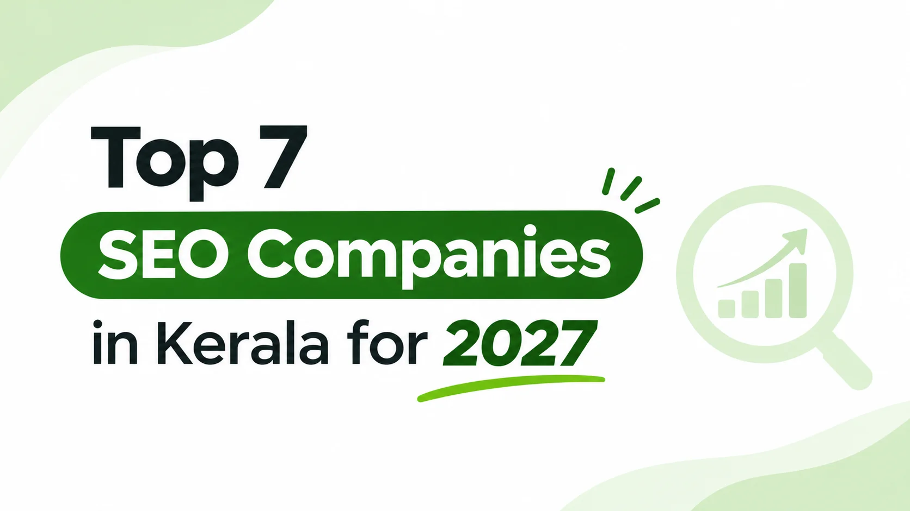

The top SEO companies in Kerala for 2027 are Bamboost (Kozhikode), SpiderWorks (Kochi), Quadcubes (Kozhikode and Kochi), Haris&Co (Kozhikode), Progbiz (Kannur), YSEO (Kochi) and Techpullers (Kochi).
This list is for Kerala businesses that want more calls and enquiries from Google. Each entry covers the same three things: where the agency is based, what it offers and who it suits, so you can shortlist SEO companies in Kerala quickly.
Top SEO Companies in Kerala (2027 List)
1. Bamboost, Kozhikode
Bamboost is an SEO and web development company in Kozhikode, serving businesses across Kerala. It specialises in technical, local, on-page, off-page, and AI SEO, alongside SEO-ready website development for industries
2. SpiderWorks, Kochi
SpiderWorks is based in Kakkanad, Kochi. It offers SEO alongside web development, social media marketing and content work, so it suits businesses that want their SEO, website and social media handled by one team.
3. Quadcubes, Kozhikode and Kochi
Quadcubes works from Kozhikode and Kochi. Its SEO sits within a wider mix of digital marketing, creative design, branding and web development, which suits brands that want SEO tied closely to design and campaign work.
4. Haris&Co, Kozhikode
Haris&Co is based in Kozhikode and also serves clients in the Gulf. It offers SEO with content, social media and influencer marketing, with a strong focus on lead generation. It suits businesses that judge marketing mainly by leads and return on spend.
5. Progbiz, Kannur
Progbiz is based in Chakkarakkal, Kannur. It offers SEO as part of a wider list that includes branding, digital marketing, web and app development, and AI automation. It suits north Kerala businesses that want branding, technology and SEO from one place.
6. YSEO, Kochi
YSEO is based in Kochi. It offers SEO with technical audits and content optimisation, alongside PPC, social media and web design. It suits businesses that want a search-led team to fix and grow an existing website.
7. Techpullers, Kochi
Techpullers is based in Kakkanad, Kochi, and started out as an SEO company. It now offers SEO with PPC, social media marketing and web development. It suits businesses that want organic and paid search run side by side.
How to Choose from These SEO Companies in Kerala
To choose an SEO company, judge how it will work with you, not how big or old it is. Ask every agency on your shortlist about these six things:
- A clear plan. Ask what they'll do in the first 90 days, page by page.
- Honest reporting. Monthly reports should show calls, enquiries and traffic, not just rankings.
- Direct access. You should be able to talk to the person doing the work.
- Local know-how. If customers find you on Google Maps, the work should start with your Google Business Profile (local SEO).
- AI search ready. Ask how they'll help you show up in Google's AI answers and ChatGPT (GEO).
- White-hat only. No bought links and no guaranteed #1 rankings. Google itself says no one can guarantee a top spot.
Questions to Ask Before Hiring an SEO Agency
Before you sign, put these seven questions to every SEO agency on your shortlist. How they answer tells you more than any sales deck.
- "Who will actually work on my account?" Look for a named person you can call, not just a sales contact.
- "Can I see work for a business like mine?" A real example with before-and-after data is ideal. An honest "not in your industry yet" is fine too.
- "How do you build links?" Good answers mention content, local listings and genuine mentions. "500 backlinks a month" is a red flag.
- "Who owns the accounts and content?" You should own your Search Console, GA4, Google Business Profile and every page written for you.
- "How will we measure success?" Agree on calls, enquiries and traffic from your own data before work starts.
- "What do you need from me?" Expect requests for website access, approvals and time for a monthly review.
- "What happens if we stop working together?" Look for a short notice period, no long lock-in and a full handover.